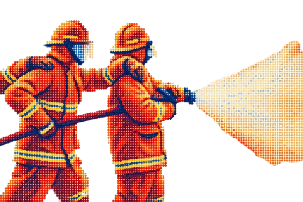

A systems map of the causal drivers behind patient-information loss at the scene-to-hospital handoff, across first responders: dispatch, fire, and paramedics, handing off to hospital ED intake. Group 5, GBDA 402. Drag the canvas, scroll to zoom, click a node for sources.